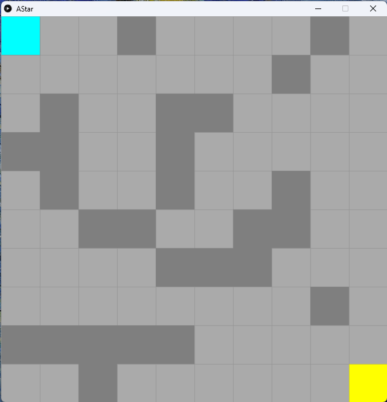
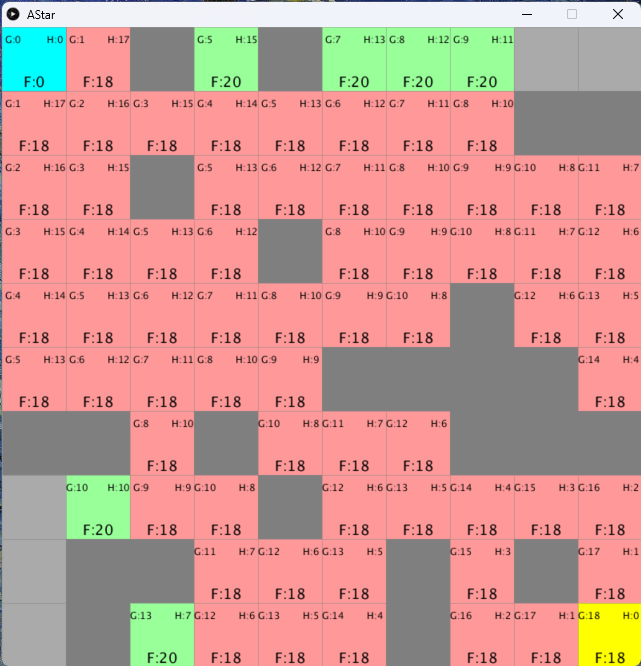
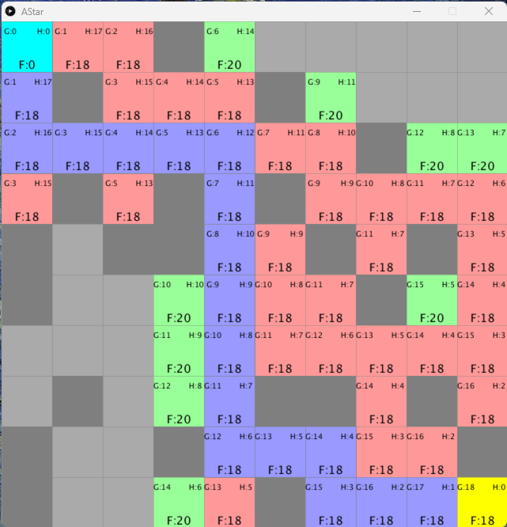

A*演算法
A* 演算法是一種常見於路徑搜索的演算法。它可以在圖或網格中找到從起點到終點的最短路徑。相較於前一章的洪水演算法，A* 演算法更加高效。常見於2D網格遊戲的路徑運算中。
1. 準備好網格內容、牆和加入鄰居
x1# A demo of the A* pathfinding algorithm.2cols = rows = 103spots = []4start = end = None5
6def setup():7 global start, end, spots8 size(800, 800)9 rectMode(CENTER)10 textAlign(CENTER, CENTER)11
12 spots = [[Spot(i, j) for j in range(cols)] for i in range(rows)]13
14 start = spots[0][0]15 end = spots[cols-1][rows-1]16
17 for i in range(rows):18 for j in range(cols): 19 spots[i][j].addWall() 20
21 for i in range(rows):22 for j in range(cols):23 spots[i][j].addNeighbors(spots)24
25def draw():26 background(0)27 for i in range(rows):28 for j in range(cols):29 spots[i][j].show('#AAAAAA')30 31 start.show('#00FFFF')32 end.show('#FFFF00')33
34class Spot:35
36 def __init__(self, _i, _j):37 self.w = width/cols38 self.h = height/rows39 self.i = _i40 self.j = _j41 self.x = self.i * self.w + self.w/242 self.y = self.j * self.h + self.h/243 self.wall = False44 self.neighbors = []45
46 def show(self, _color):47 fill(_color)48 if self.wall:49 fill(127)50 stroke(127)51 strokeWeight(0.5)52 rect(self.x, self.y, self.w, self.h)53
54 def addWall(self):55 if self != start and self != end:56 self.wall = True if random(1) < 0.25 else False57
58 def addNeighbors(self, _spots):59 i = self.i60 j = self.j61 if i < cols - 1 and not _spots[i+1][j].wall:62 self.neighbors.append(_spots[i+1][j])63 if i > 0 and not _spots[i-1][j].wall:64 self.neighbors.append(_spots[i-1][j])65 if j < rows - 1 and not _spots[i][j+1].wall:66 self.neighbors.append(_spots[i][j+1])67 if j > 0 and not _spots[i][j-1].wall:68 self.neighbors.append(_spots[i][j-1])
因為前一章已經做過一個差不多一模一樣的介面和程序，這裡就不一一講解了，有興趣或問題可以看上一章。
2. 準備好每個spot的cost和顯示介面
xxxxxxxxxx881# A demo of the A* pathfinding algorithm.2cols = rows = 103spots = []4start = end = None5openSet = []6closeSet = []7
8def setup():9 global start, end, spots, openSet, closeSet10 size(800, 800)11 rectMode(CENTER)12 textAlign(CENTER, CENTER)13
14 spots = [[Spot(i, j) for j in range(cols)] for i in range(rows)]15
16 start = spots[0][0]17 end = spots[cols-1][rows-1]18
19 for i in range(rows):20 for j in range(cols): 21 spots[i][j].addWall() 22
23 for i in range(rows):24 for j in range(cols):25 spots[i][j].addNeighbors(spots)26
27 openSet = [start]28 closeSet = []29 start.gCost = 030 31
32
33def draw():34 background(0)35 for i in range(rows):36 for j in range(cols):37 spots[i][j].show('#AAAAAA')38 39 start.show('#00FFFF')40 end.show('#FFFF00')41
42class Spot:43
44 def __init__(self, _i, _j):45 self.w = width/cols46 self.h = height/rows47 self.i = _i48 self.j = _j49 self.x = self.i * self.w + self.w/250 self.y = self.j * self.h + self.h/251 self.wall = False52 self.neighbors = []53 self.gCost = float('inf')54 self.hCost = 055 self.fCost = 056 self.previous = None57
58 def show(self, _color):59 fill(_color)60 if self.wall:61 fill(127)62 stroke(127)63 strokeWeight(0.5)64 rect(self.x, self.y, self.w, self.h)65 if self in openSet or self in closeSet:66 fill(0)67 noStroke()68 textSize(12)69 text("G:" + str(self.gCost), self.x - self.w/3, self.y-self.h/3)70 text("H:" + str(self.hCost), self.x + self.w/3, self.y-self.h/3)71 textSize(18)72 text("F:" + str(self.fCost), self.x, self.y+self.h/3)73
74 def addWall(self):75 if self != start and self != end:76 self.wall = True if random(1) < 0.25 else False77
78 def addNeighbors(self, _spots):79 i = self.i80 j = self.j81 if i < cols - 1 and not _spots[i+1][j].wall:82 self.neighbors.append(_spots[i+1][j])83 if i > 0 and not _spots[i-1][j].wall:84 self.neighbors.append(_spots[i-1][j])85 if j < rows - 1 and not _spots[i][j+1].wall:86 self.neighbors.append(_spots[i][j+1])87 if j > 0 and not _spots[i][j-1].wall:88 self.neighbors.append(_spots[i][j-1])
A* 演算法，每個節點(或網格)的計分方法，都是由兩個cost去組成，gCost是指由目標(goal)到現在這一格的距離，而hCost是指由起始點到這一格共行了多少距離。最後這兩個cost相加就叫做fCost，這個cost就是我們想要的分數。
xxxxxxxxxx81class Spot:2
3 def __init__(self, _i, _j):4 #(same as before)5 self.gCost = float('inf')6 self.hCost = 07 self.fCost = 08 self.previous = None首先在Spot class，加入上文所說的cost。
xxxxxxxxxx61# A demo of the A* pathfinding algorithm.2cols = rows = 103spots = []4start = end = None5openSet = []6closeSet = []接著在最上方加入openSet = []和closeSet = []。A* 演算法會有一個叫openSet用來紀錄待計算的格，有點像上一章的等候列，另外經過計算的格會由openSet落入closeSet中不會再重覆計算。這部分下一節會詳談和實現。
xxxxxxxxxx71def setup():2 global start, end, spots, openSet, closeSet3 4 #(same as before)5 openSet = [start]6 closeSet = []7 start.gCost = 0接著在setup()的最後，開始演算法前第一步是將start1 放入openSet和計定start的gCost為02。
xxxxxxxxxx151class Spot:2 3 def __init__(self):4 #(same as before)5 6 def show(self, _color):7 #(same as before)8 if self in openSet or self in closeSet:9 fill(0)10 noStroke()11 textSize(12)12 text("G:" + str(self.gCost), self.x - self.w/3, self.y-self.h/3)13 text("H:" + str(self.hCost), self.x + self.w/3, self.y-self.h/3)14 textSize(18)15 text("F:" + str(self.fCost), self.x, self.y+self.h/3)最後返回Spotclass，將三個相關的cost都顯示出來。
3. 更新每一個格的cost
xxxxxxxxxx1291# A demo of the A* pathfinding algorithm.2cols = rows = 103spots = []4start = end = None5openSet = []6closeSet = []7
8def setup():9 global start, end, spots, openSet, closeSet10 size(800, 800)11 rectMode(CENTER)12 textAlign(CENTER, CENTER)13 frameRate(1)14
15 spots = [[Spot(i, j) for j in range(cols)] for i in range(rows)]16
17 start = spots[0][0]18 end = spots[cols-1][rows-1]19
20 for i in range(rows):21 for j in range(cols): 22 spots[i][j].addWall() 23
24 for i in range(rows):25 for j in range(cols):26 spots[i][j].addNeighbors(spots)27
28 openSet = [start]29 closeSet = []30 start.gCost = 031 32
33
34def draw():35 background(0)36
37 # find the lowest index of openset38 lowestIndex = 039 for i in range(len(openSet)):40 if openSet[i].fCost < openSet[lowestIndex].fCost:41 lowestIndex = i42 43 current = openSet[lowestIndex]44
45 # update the current spot46 # 1. remove it from openSet47 # 2. add it to closeSet48 # 3. find its neighbors49 # 4. calculate the gCost, hCost, fCost50 # 5. update the previous spot51 # 6. add it to openSet52 openSet.remove(current)53 closeSet.append(current)54 for neighbor in current.neighbors:55 if neighbor not in closeSet and not neighbor.wall:56 tempGCost = current.gCost + 157 if neighbor in openSet:58 if tempGCost < neighbor.gCost:59 neighbor.gCost = tempGCost60 else:61 neighbor.gCost = tempGCost62 openSet.append(neighbor)63 neighbor.hCost = walkingDist(neighbor, end)64 neighbor.fCost = neighbor.gCost + neighbor.hCost65 neighbor.previous = current66
67
68 for i in range(rows):69 for j in range(cols):70 if spots[i][j] in openSet:71 spots[i][j].show('#99FF99')72 elif spots[i][j] in closeSet:73 spots[i][j].show('#FF9999')74 else:75 spots[i][j].show('#AAAAAA')76 77 start.show('#00FFFF')78 end.show('#FFFF00')79
80def walkingDist(_spot1, _spot2):81 return abs(_spot1.i - _spot2.i) + abs(_spot1.j - _spot2.j)82
83class Spot:84
85 def __init__(self, _i, _j):86 self.w = width/cols87 self.h = height/rows88 self.i = _i89 self.j = _j90 self.x = self.i * self.w + self.w/291 self.y = self.j * self.h + self.h/292 self.wall = False93 self.neighbors = []94 self.gCost = float('inf')95 self.hCost = 096 self.fCost = 097 self.previous = None98
99 def show(self, _color):100 fill(_color)101 if self.wall:102 fill(127)103 stroke(127)104 strokeWeight(0.5)105 rect(self.x, self.y, self.w, self.h)106 if self in openSet or self in closeSet:107 fill(0)108 noStroke()109 textSize(12)110 text("G:" + str(self.gCost), self.x - self.w/3, self.y-self.h/3)111 text("H:" + str(self.hCost), self.x + self.w/3, self.y-self.h/3)112 textSize(18)113 text("F:" + str(self.fCost), self.x, self.y+self.h/3)114
115 def addWall(self):116 if self != start and self != end:117 self.wall = True if random(1) < 0.25 else False118
119 def addNeighbors(self, _spots):120 i = self.i121 j = self.j122 if i < cols - 1 and not _spots[i+1][j].wall:123 self.neighbors.append(_spots[i+1][j])124 if i > 0 and not _spots[i-1][j].wall:125 self.neighbors.append(_spots[i-1][j])126 if j < rows - 1 and not _spots[i][j+1].wall:127 self.neighbors.append(_spots[i][j+1])128 if j > 0 and not _spots[i][j-1].wall:129 self.neighbors.append(_spots[i][j-1])
xxxxxxxxxx321def draw():2 background(0)3
4 # find the lowest index of openset5 lowestIndex = 06 for i in range(len(openSet)):7 if openSet[i].fCost < openSet[lowestIndex].fCost:8 lowestIndex = i9 10 current = openSet[lowestIndex]11
12 # update the current spot13 # 1. remove it from openSet14 # 2. add it to closeSet15 # 3. find its neighbors16 # 4. calculate the gCost, hCost, fCost17 # 5. update the previous spot18 # 6. add it to openSet19 openSet.remove(current)20 closeSet.append(current)21 for neighbor in current.neighbors:22 if neighbor not in closeSet and not neighbor.wall:23 tempGCost = current.gCost + 124 if neighbor in openSet:25 if tempGCost < neighbor.gCost:26 neighbor.gCost = tempGCost27 else:28 neighbor.gCost = tempGCost29 openSet.append(neighbor)30 neighbor.hCost = walkingDist(neighbor, end)31 neighbor.fCost = neighbor.gCost + neighbor.hCost32 neighbor.previous = currentA* 演算法會有一個openSet和closeSet，第一步是將起點加入到openSet，之後的每一步，
首先要找到全部
openSet中，分數(fCost)最低的格，設定這一格做current將這一格
current移出openSet將這一格
current移入closeSet找出這一格
current的所有neighbors計算基於
current鄰居的gCost如果鄰居本身就是
openSet，就對比基於current鄰居計算的gCost是否少於它的gCost如果是不在
openSet的新一格，就更新它的gCost計算每個鄰居的
hCost和fCost更新這個鄰居是從哪裡來
xxxxxxxxxx131def draw():2 #(same as before)3 for i in range(rows):4 for j in range(cols):5 if spots[i][j] in openSet:6 spots[i][j].show('#99FF99')7 elif spots[i][j] in closeSet:8 spots[i][j].show('#FF9999')9 else:10 spots[i][j].show('#AAAAAA')11 12 start.show('#00FFFF')13 end.show('#FFFF00')之後就為openSet和closeSet加入不同的顏色方便觀察。
xxxxxxxxxx21def walkingDist(_spot1, _spot2):2 return abs(_spot1.i - _spot2.i) + abs(_spot1.j - _spot2.j)最後就是加入計算hCost的函數。gCost是一路走出累加了多少步，需要考慮中途遇到的障礙物，而 hCost是預估到終點還有多少步，這個預估是不需要理會障礙物的，就當是完全沒有障礙物，只計算步數。由於我們的計算是只有上、下、左和右，沒有打斜走的，所以由一格到另一格要走的最短路程，就是兩格的i的差和j的差之和。
4. 加入如果沒有答案或已找到路徑
xxxxxxxxxx1521# A demo of the A* pathfinding algorithm.2cols = rows = 103spots = []4start = end = None5openSet = []6closeSet = []7path = []8
9def setup():10 global start, end, spots, openSet, closeSet11 size(800, 800)12 rectMode(CENTER)13 textAlign(CENTER, CENTER)14 frameRate(10)15
16 spots = [[Spot(i, j) for j in range(cols)] for i in range(rows)]17
18 start = spots[0][0]19 end = spots[cols-1][rows-1]20
21 for i in range(rows):22 for j in range(cols): 23 spots[i][j].addWall() 24
25 for i in range(rows):26 for j in range(cols):27 spots[i][j].addNeighbors(spots)28
29 openSet = [start]30 closeSet = []31 start.gCost = 032 33
34
35def draw():36 global path37 background(0)38
39 # if openSet is empty, then no solution40 if len(openSet) == 0:41 print("no solution")42 noLoop()43 return44 45 # find the lowest index of openset46 lowestIndex = 047 for i in range(len(openSet)):48 if openSet[i].fCost < openSet[lowestIndex].fCost:49 lowestIndex = i50 51 current = openSet[lowestIndex]52
53 # if current is the end, then find the path54 if current == end:55 print("find the path")56 path = [current]57 temp = current58 while temp.previous: # only the start has no previous59 path.append(temp.previous)60 temp = temp.previous61 print("path is found!")62 noLoop()63 64 # update the current spot65 # 1. remove it from openSet66 # 2. add it to closeSet67 # 3. find its neighbors68 # 4. calculate the gCost, hCost, fCost69 # 5. update the previous spot70 # 6. add it to openSet71 openSet.remove(current)72 closeSet.append(current)73 for neighbor in current.neighbors:74 if neighbor not in closeSet and not neighbor.wall:75 tempGCost = current.gCost + 176 if neighbor in openSet:77 if tempGCost < neighbor.gCost:78 neighbor.gCost = tempGCost79 else:80 neighbor.gCost = tempGCost81 openSet.append(neighbor)82 neighbor.hCost = walkingDist(neighbor, end)83 neighbor.fCost = neighbor.gCost + neighbor.hCost84 neighbor.previous = current85
86
87 for i in range(rows):88 for j in range(cols):89 if spots[i][j] in openSet:90 spots[i][j].show('#99FF99')91 elif spots[i][j] in closeSet:92 spots[i][j].show('#FF9999')93 else:94 spots[i][j].show('#AAAAAA')95 96 # draw the path97 for p in path:98 p.show('#9999FF')99
100 start.show('#00FFFF')101 end.show('#FFFF00')102
103def walkingDist(_spot1, _spot2):104 return abs(_spot1.i - _spot2.i) + abs(_spot1.j - _spot2.j)105
106class Spot:107
108 def __init__(self, _i, _j):109 self.w = width/cols110 self.h = height/rows111 self.i = _i112 self.j = _j113 self.x = self.i * self.w + self.w/2114 self.y = self.j * self.h + self.h/2115 self.wall = False116 self.neighbors = []117 self.gCost = float('inf')118 self.hCost = 0119 self.fCost = 0120 self.previous = None121
122 def show(self, _color):123 fill(_color)124 if self.wall:125 fill(127)126 stroke(127)127 strokeWeight(0.5)128 rect(self.x, self.y, self.w, self.h)129 if self in openSet or self in closeSet:130 fill(0)131 noStroke()132 textSize(12)133 text("G:" + str(self.gCost), self.x - self.w/3, self.y-self.h/3)134 text("H:" + str(self.hCost), self.x + self.w/3, self.y-self.h/3)135 textSize(18)136 text("F:" + str(self.fCost), self.x, self.y+self.h/3)137
138 def addWall(self):139 if self != start and self != end:140 self.wall = True if random(1) < 0.25 else False141
142 def addNeighbors(self, _spots):143 i = self.i144 j = self.j145 if i < cols - 1 and not _spots[i+1][j].wall:146 self.neighbors.append(_spots[i+1][j])147 if i > 0 and not _spots[i-1][j].wall:148 self.neighbors.append(_spots[i-1][j])149 if j < rows - 1 and not _spots[i][j+1].wall:150 self.neighbors.append(_spots[i][j+1])151 if j > 0 and not _spots[i][j-1].wall:152 self.neighbors.append(_spots[i][j-1])
xxxxxxxxxx41 # if openSet is empty, then no solution2 if len(openSet) == 0:3 print("no solution")4 noLoop()加入兩個考量，如果openSet是空的話，而又有未答案的話，即沒有答案。
xxxxxxxxxx101 # if current is the end, then find the path2 if current == end:3 print("find the path")4 path = [current]5 temp = current6 while temp.previous: # only the start has no previous7 path.append(temp.previous)8 temp = temp.previous9 print("path is found!")10 noLoop()如果找到end的話，即找到答案。如果目前所處的位置是終點，就找到了一條路徑。當找到路徑後，程式會列印出「找到路徑」的訊息，並建立一個包含當前位置的列表，接著使用一個暫存變數來追蹤前一個位置，並將前一個位置加入到路徑列表中。直到追蹤到起點，也就是前一個位置沒有「previous」屬性時，迴圈才會停止。最後，程式會列印出「已找到路徑！」的訊息，並退出所有迴圈。
考考你

試著將程式美化到我這個效果，我是將所有closeSet的顏色，用map將其變成color(map(spots[i][j].gCost, 0, cols + rows, 0, 255)，記得要在setup將顏色先設定成colorMode(HSB, 255)